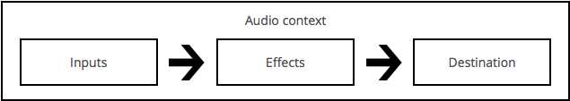

The Web Audio API provides a powerful and versatile system for controlling audio on the Web, allowing developers to choose audio sources, add effects to audio, create audio visualizations, apply spatial effects (such as panning) and much more.
Web audio concepts and usage
The Web Audio API involves handling audio operations inside an audio context, and has been designed to allow modular routing. Basic audio operations are performed with audio nodes, which are linked together to form an audio routing graph. Several sources — with different types of channel layout — are supported even within a single context. This modular design provides the flexibility to create complex audio functions with dynamic effects.
Audio nodes are linked via their inputs and outputs, forming a chain that starts with one or more sources, goes through one or more nodes, then ends up at a destination (although you don't have to provide a destination if you, say, just want to visualise some audio data.) A simple, typical workflow for web audio would look something like this:
- Create audio context
- Inside the context, create sources — such as
<audio>, oscillator, stream - Create effects nodes, such as reverb, biquad filter, panner, compressor
- Choose final destination of audio, for example your system speakers
- Connect the sources up to the effects, and the effects to the destination.

Timing is controlled with high precision and low latency, allowing developers to write code that responds accurately to events and is able to target specific samples, even at a high sample rate. So applications such as drum machines and sequencers are well within reach.
The Web Audio API also allows us to control how audio is spatialized. Using a system based on a source-listener model, it allows control of the panning model and deals with distance-induced attenuation or doppler shift induced by a moving source (or moving listener).
Note: You can read about the theory of the Web Audio API in a lot more detail in our article Basic concepts behind Web Audio API.
Web Audio API Interfaces
The Web Audio API has a total of 28 interfaces and associated events, which we have split up into nine categories of functionality.
General audio graph definition
General containers and definitions that shape audio graphs in Web Audio API usage.
AudioContext- The
AudioContextinterface represents an audio-processing graph built from audio modules linked together, each represented by anAudioNode. An audio context controls the creation of the nodes it contains and the execution of the audio processing, or decoding. You need to create anAudioContextbefore you do anything else, as everything happens inside a context. AudioNode- The
AudioNodeinterface represents an audio-processing module like an audio source (e.g. an HTML<audio>or<video>element), audio destination, intermediate processing module (e.g. a filter likeBiquadFilterNode, or volume control likeGainNode). AudioParam- The
AudioParaminterface represents an audio-related parameter, like one of anAudioNode. It can be set to a specific value or a change in value, and can be scheduled to happen at a specific time and following a specific pattern. ended(event)- The
endedevent is fired when playback has stopped because the end of the media was reached.
Defining audio sources
Interfaces that define audio sources for use in the Web Audio API.
OscillatorNode- The
OscillatorNodeinterface represents a sine wave. It is anAudioNodeaudio-processing module that causes a given frequency of sine wave to be created. AudioBuffer- The
AudioBufferinterface represents a short audio asset residing in memory, created from an audio file using theAudioContext.decodeAudioData()method, or created with raw data usingAudioContext.createBuffer(). Once decoded into this form, the audio can then be put into anAudioBufferSourceNode. AudioBufferSourceNode- The
AudioBufferSourceNodeinterface represents an audio source consisting of in-memory audio data, stored in anAudioBuffer. It is anAudioNodethat acts as an audio source. MediaElementAudioSourceNode- The
MediaElementAudioSourceNodeinterface represents an audio source consisting of an HTML5<audio>or<video>element. It is anAudioNodethat acts as an audio source. MediaStreamAudioSourceNode- The
MediaStreamAudioSourceNodeinterface represents an audio source consisting of a WebRTCMediaStream(such as a webcam or microphone). It is anAudioNodethat acts as an audio source.
Defining audio effects filters
Interfaces for defining effects that you want to apply to your audio sources.
BiquadFilterNode- The
BiquadFilterNodeinterface represents a simple low-order filter. It is anAudioNodethat can represent different kinds of filters, tone control devices or graphic equalizers. ABiquadFilterNodealways has exactly one input and one output. ConvolverNode- The
ConvolverNodeinterface is anAudioNodethat performs a Linear Convolution on a given AudioBuffer, often used to achieve a reverb effect. DelayNode- The
DelayNodeinterface represents a delay-line; anAudioNodeaudio-processing module that causes a delay between the arrival of an input data and its propagation to the output. DynamicsCompressorNode- The
DynamicsCompressorNodeinterface provides a compression effect, which lowers the volume of the loudest parts of the signal in order to help prevent clipping and distortion that can occur when multiple sounds are played and multiplexed together at once. GainNode- The
GainNodeinterface represents a change in volume. It is anAudioNodeaudio-processing module that causes a given gain to be applied to the input data before its propagation to the output. StereoPannerNode- The
StereoPannerNodeinterface represents a simple stereo panner node that can be used to pan an audio stream left or right. WaveShaperNode- The
WaveShaperNodeinterface represents a non-linear distorter. It is anAudioNodethat use a curve to apply a waveshaping distortion to the signal. Beside obvious distortion effects, it is often used to add a warm feeling to the signal. PeriodicWave- Used to define a periodic waveform that can be used to shape the output of an
OscillatorNode.
Defining audio destinations
Once you are done processing your audio, these interfaces define where to output it.
AudioDestinationNode- The
AudioDestinationNodeinterface represents the end destination of an audio source in a given context — usually the speakers of your device. MediaStreamAudioDestinationNode- The
MediaStreamAudioDestinationNodeinterface represents an audio destination consisting of a WebRTCMediaStreamwith a singleAudioMediaStreamTrack, which can be used in a similar way to a MediaStream obtained fromNavigator.getUserMedia. It is anAudioNodethat acts as an audio destination.
Data analysis and visualisation
If you want to extract time, frequency and other data from your audio, the AnalyserNode is what you need.
AnalyserNode- The
AnalyserNodeinterface represents a node able to provide real-time frequency and time-domain analysis information, for the purposes of data analysis and visualization.
Splitting and merging audio channels
To split and merge audio channels, you'll use these interfaces.
ChannelSplitterNode- The
ChannelSplitterNodeinterface separates the different channels of an audio source out into a set of mono outputs. ChannelMergerNode- The
ChannelMergerNodeinterface reunites different mono inputs into a single output. Each input will be used to fill a channel of the output.
Audio spatialization
These interfaces allow you to add audio spatialization panning effects to your audio sources.
AudioListener- The
AudioListenerinterface represents the position and orientation of the unique person listening to the audio scene used in audio spatialization. PannerNode- The
PannerNodeinterface represents the behavior of a signal in space. It is anAudioNodeaudio-processing module describing its position with right-hand Cartesian coordinates, its movement using a velocity vector and its directionality using a directionality cone.
Audio processing via JavaScript
If you want to use an external script to process your audio source, the below Node and events make it possible.
Note: As of the August 29 2014 Web Audio API spec publication, these features have been marked as deprecated, and are soon to be replaced by Audio_Workers.
ScriptProcessorNode- The
ScriptProcessorNodeinterface allows the generation, processing, or analyzing of audio using JavaScript. It is anAudioNodeaudio-processing module that is linked to two buffers, one containing the current input, one containing the output. An event, implementing theAudioProcessingEventinterface, is sent to the object each time the input buffer contains new data, and the event handler terminates when it has filled the output buffer with data. audioprocess(event)- The
audioprocessevent is fired when an input buffer of a Web Audio APIScriptProcessorNodeis ready to be processed. AudioProcessingEvent- The Web Audio API
AudioProcessingEventrepresents events that occur when aScriptProcessorNodeinput buffer is ready to be processed.
Offline/background audio processing
It is possible to process/render an audio graph very quickly in the background — rendering it to an AudioBuffer rather than to the device's speakers — with the following.
OfflineAudioContext- The
OfflineAudioContextinterface is anAudioContextinterface representing an audio-processing graph built from linked togetherAudioNodes. In contrast with a standardAudioContext, anOfflineAudioContextdoesn't really render the audio but rather generates it, as fast as it can, in a buffer. complete(event)- The
completeevent is fired when the rendering of anOfflineAudioContextis terminated. OfflineAudioCompletionEvent- The
OfflineAudioCompletionEventrepresents events that occur when the processing of anOfflineAudioContextis terminated. Thecompleteevent implements this interface.
Audio Workers
Audio workers provide the ability for direct scripted audio processing to be done inside a web worker context, and are defined by a couple of interfaces (new as of 29th August 2014.) These are not implemented in any browsers yet. When implemented, they will replace ScriptProcessorNode, and the other features discussed in the Audio processing via JavaScript section above.
AudioWorkerNode- The AudioWorkerNode interface represents an
AudioNodethat interacts with a worker thread to generate, process, or analyse audio directly. AudioWorkerGlobalScope- The
AudioWorkerGlobalScopeinterface is aDedicatedWorkerGlobalScope-derived object representing a worker context in which an audio processing script is run; it is designed to enable the generation, processing, and analysis of audio data directly using JavaScript in a worker thread. AudioProcessEvent- This is an
Eventobject that is dispatched toAudioWorkerGlobalScopeobjects to perform processing.
Obsolete interfaces
The following interfaces were defined in old versions of the Web Audio API spec, but are now obsolete and have been replaced by other interfaces.
JavaScriptNode- Used for direct audio processing via JavaScript. This interface is obsolete, and has been replaced by
ScriptProcessorNode. WaveTableNode- Used to define a periodic waveform. This interface is obsolete, and has been replaced by
PeriodicWave.
Example
This example shows a wide variety of Web Audio API functions being used. You can see this code in action on the Voice-change-o-matic demo (also check out the full source code at Github) — this is an experimental voice changer toy demo; keep your speakers turned down low when you use it, at least to start!
The Web Audio API lines are highlighted; if you want to find more out about what the different methods, etc. do, have a search around the reference pages.
var audioCtx = new (window.AudioContext || window.webkitAudioContext)(); // define audio context
// Webkit/blink browsers need prefix, Safari won't work without window.
var voiceSelect = document.getElementById("voice"); // select box for selecting voice effect options
var visualSelect = document.getElementById("visual"); // select box for selecting audio visualization options
var mute = document.querySelector('.mute'); // mute button
var drawVisual; // requestAnimationFrame
var analyser = audioCtx.createAnalyser();
var distortion = audioCtx.createWaveShaper();
var gainNode = audioCtx.createGain();
var biquadFilter = audioCtx.createBiquadFilter();
function makeDistortionCurve(amount) { // function to make curve shape for distortion/wave shaper node to use
var k = typeof amount === 'number' ? amount : 50,
n_samples = 44100,
curve = new Float32Array(n_samples),
deg = Math.PI / 180,
i = 0,
x;
for ( ; i < n_samples; ++i ) {
x = i * 2 / n_samples - 1;
curve[i] = ( 3 + k ) * x * 20 * deg / ( Math.PI + k * Math.abs(x) );
}
return curve;
};
navigator.getUserMedia (
// constraints - only audio needed for this app
{
audio: true
},
// Success callback
function(stream) {
source = audioCtx.createMediaStreamSource(stream);
source.connect(analyser);
analyser.connect(distortion);
distortion.connect(biquadFilter);
biquadFilter.connect(gainNode);
gainNode.connect(audioCtx.destination); // connecting the different audio graph nodes together
visualize(stream);
voiceChange();
},
// Error callback
function(err) {
console.log('The following gUM error occured: ' + err);
}
);
function visualize(stream) {
WIDTH = canvas.width;
HEIGHT = canvas.height;
var visualSetting = visualSelect.value;
console.log(visualSetting);
if(visualSetting == "sinewave") {
analyser.fftSize = 2048;
var bufferLength = analyser.frequencyBinCount; // half the FFT value
var dataArray = new Uint8Array(bufferLength); // create an array to store the data
canvasCtx.clearRect(0, 0, WIDTH, HEIGHT);
function draw() {
drawVisual = requestAnimationFrame(draw);
analyser.getByteTimeDomainData(dataArray); // get waveform data and put it into the array created above
canvasCtx.fillStyle = 'rgb(200, 200, 200)'; // draw wave with canvas
canvasCtx.fillRect(0, 0, WIDTH, HEIGHT);
canvasCtx.lineWidth = 2;
canvasCtx.strokeStyle = 'rgb(0, 0, 0)';
canvasCtx.beginPath();
var sliceWidth = WIDTH * 1.0 / bufferLength;
var x = 0;
for(var i = 0; i < bufferLength; i++) {
var v = dataArray[i] / 128.0;
var y = v * HEIGHT/2;
if(i === 0) {
canvasCtx.moveTo(x, y);
} else {
canvasCtx.lineTo(x, y);
}
x += sliceWidth;
}
canvasCtx.lineTo(canvas.width, canvas.height/2);
canvasCtx.stroke();
};
draw();
} else if(visualSetting == "off") {
canvasCtx.clearRect(0, 0, WIDTH, HEIGHT);
canvasCtx.fillStyle = "red";
canvasCtx.fillRect(0, 0, WIDTH, HEIGHT);
}
}
function voiceChange() {
distortion.curve = new Float32Array;
biquadFilter.gain.value = 0; // reset the effects each time the voiceChange function is run
var voiceSetting = voiceSelect.value;
console.log(voiceSetting);
if(voiceSetting == "distortion") {
distortion.curve = makeDistortionCurve(400); // apply distortion to sound using waveshaper node
} else if(voiceSetting == "biquad") {
biquadFilter.type = "lowshelf";
biquadFilter.frequency.value = 1000;
biquadFilter.gain.value = 25; // apply lowshelf filter to sounds using biquad
} else if(voiceSetting == "off") {
console.log("Voice settings turned off"); // do nothing, as off option was chosen
}
}
// event listeners to change visualize and voice settings
visualSelect.onchange = function() {
window.cancelAnimationFrame(drawVisual);
visualize(stream);
}
voiceSelect.onchange = function() {
voiceChange();
}
mute.onclick = voiceMute;
function voiceMute() { // toggle to mute and unmute sound
if(mute.id == "") {
gainNode.gain.value = 0; // gain set to 0 to mute sound
mute.id = "activated";
mute.innerHTML = "Unmute";
} else {
gainNode.gain.value = 1; // gain set to 1 to unmute sound
mute.id = "";
mute.innerHTML = "Mute";
}
}
Specifications
| Specification | Status | Comment |
|---|---|---|
| Web Audio API | Working Draft |
Browser compatibility
| Feature | Chrome | Edge | Firefox (Gecko) | Internet Explorer | Opera | Safari (WebKit) |
|---|---|---|---|---|---|---|
| Basic support | 14 webkit | (Yes) | 23 | Not supported | 15 webkit 22 (unprefixed) |
6 webkit |
| Feature | Android | Chrome | Firefox Mobile (Gecko) | Firefox OS | IE Phone | Opera Mobile | Safari Mobile |
|---|---|---|---|---|---|---|---|
| Basic support | Not supported | 28 webkit | 25 | 1.2 | Not supported | Not supported | 6 webkit |
See also
- Using the Web Audio API
- Visualizations with Web Audio API
- Voice-change-O-matic example
- Violent Theremin example
- Web audio spatialisation basics
- Mixing Positional Audio and WebGL
- Developing Game Audio with the Web Audio API
- Porting webkitAudioContext code to standards based AudioContext
- Tones: a simple library for playing specific tones/notes using the Web Audio API.
- howler.js: a JS audio library that defaults to Web Audio API and falls back to HTML5 Audio, as well as providing other useful features.